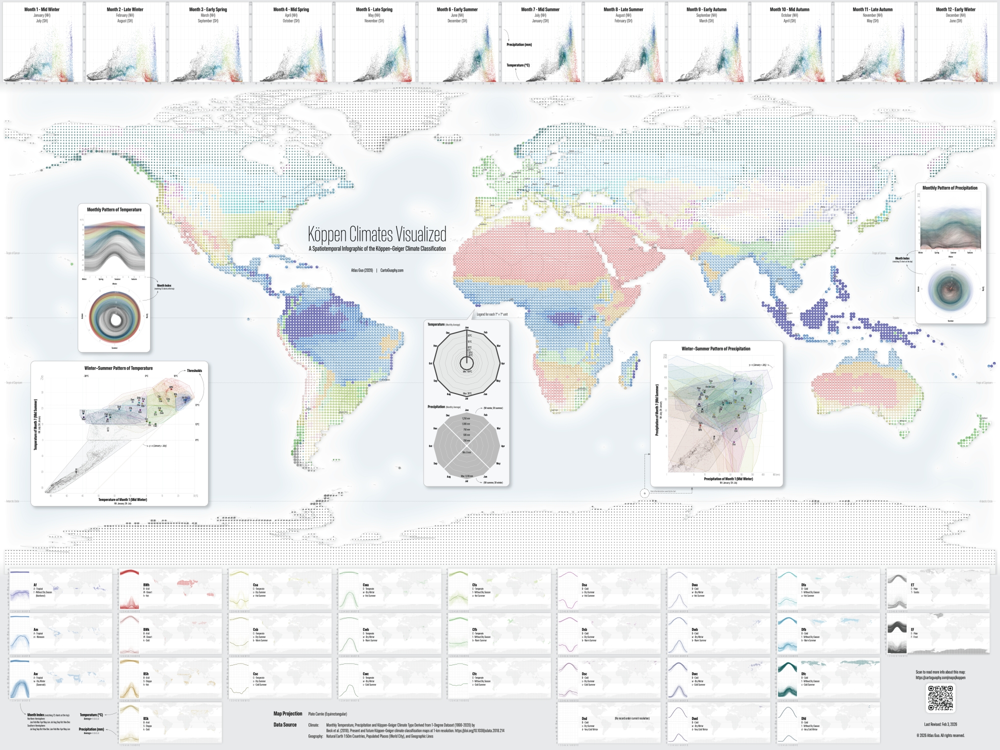
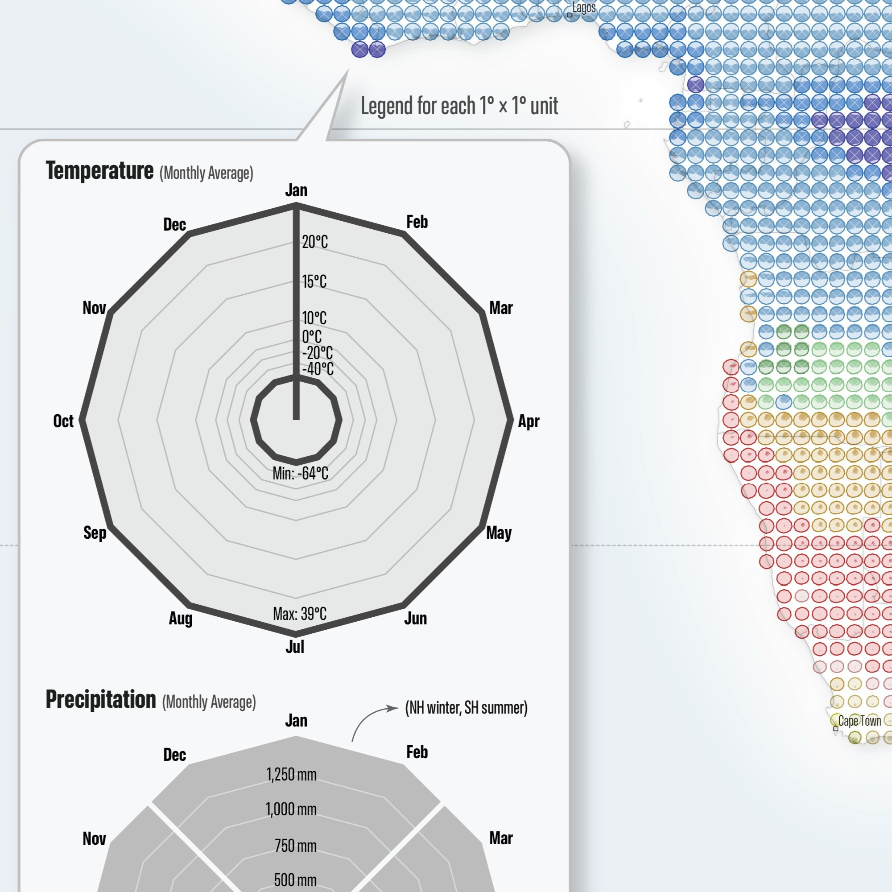
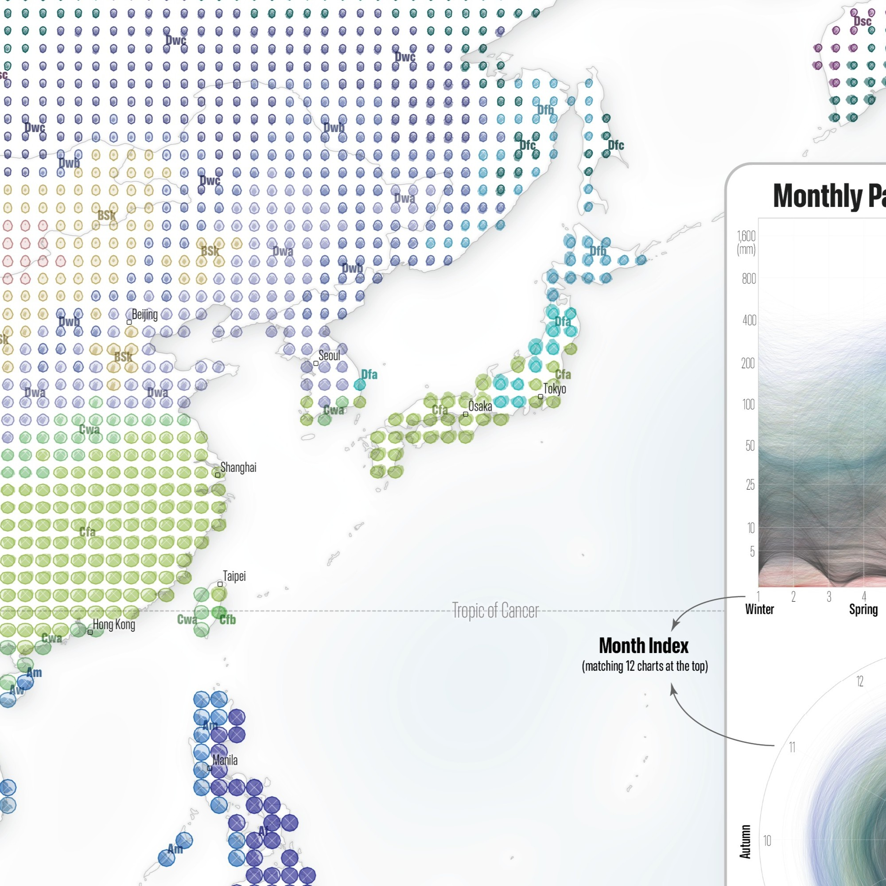
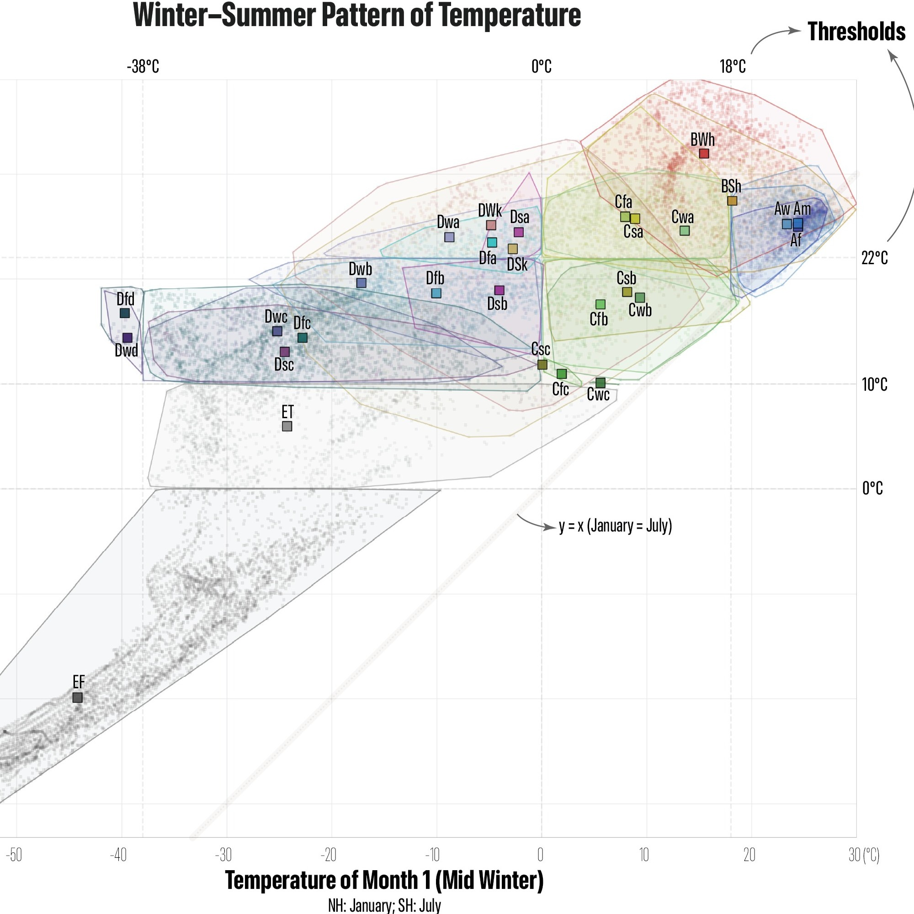
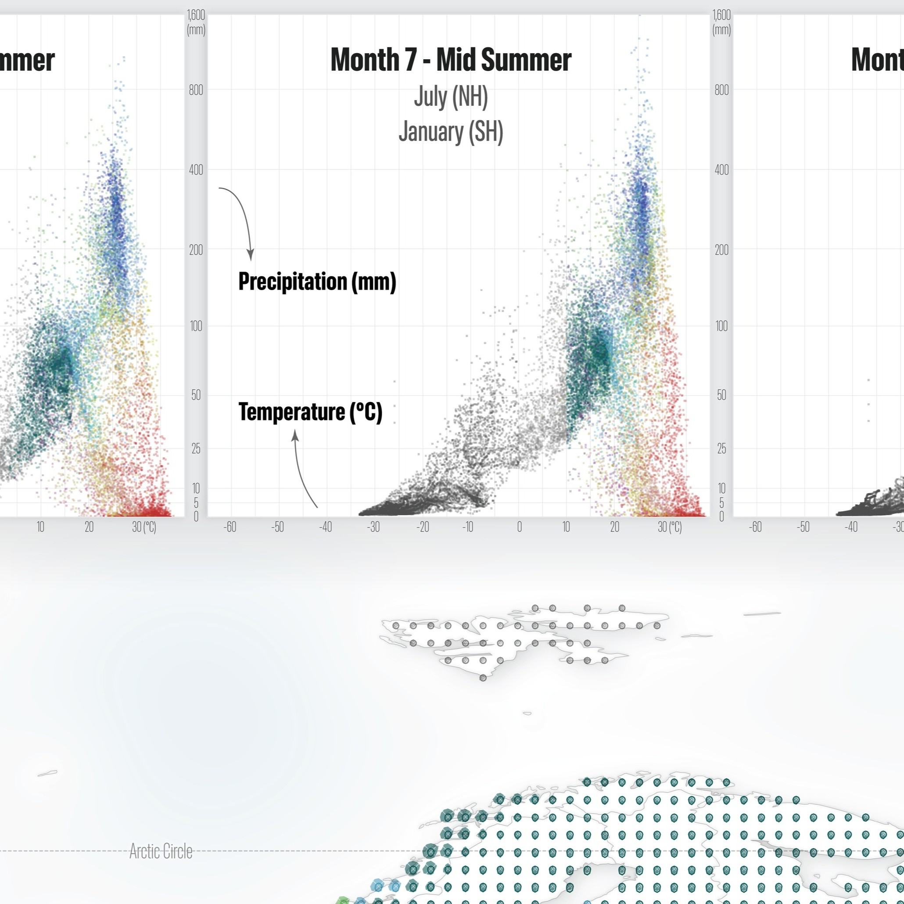
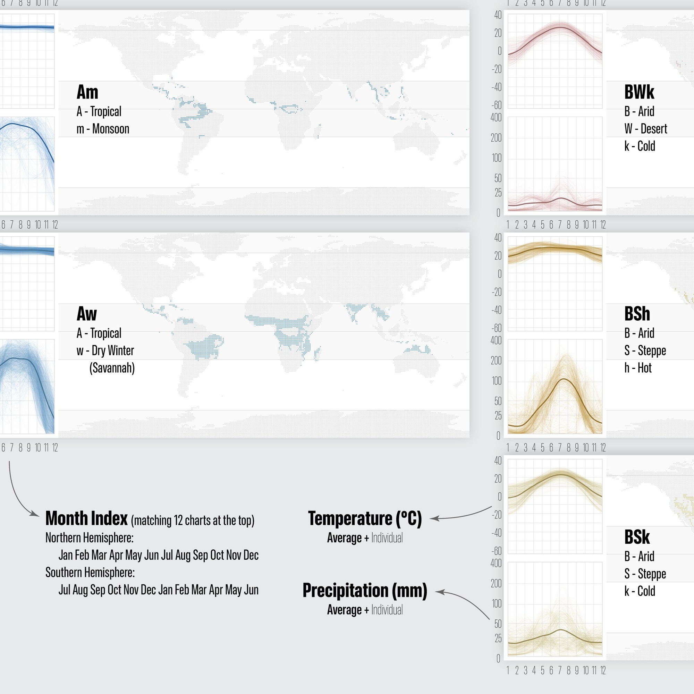
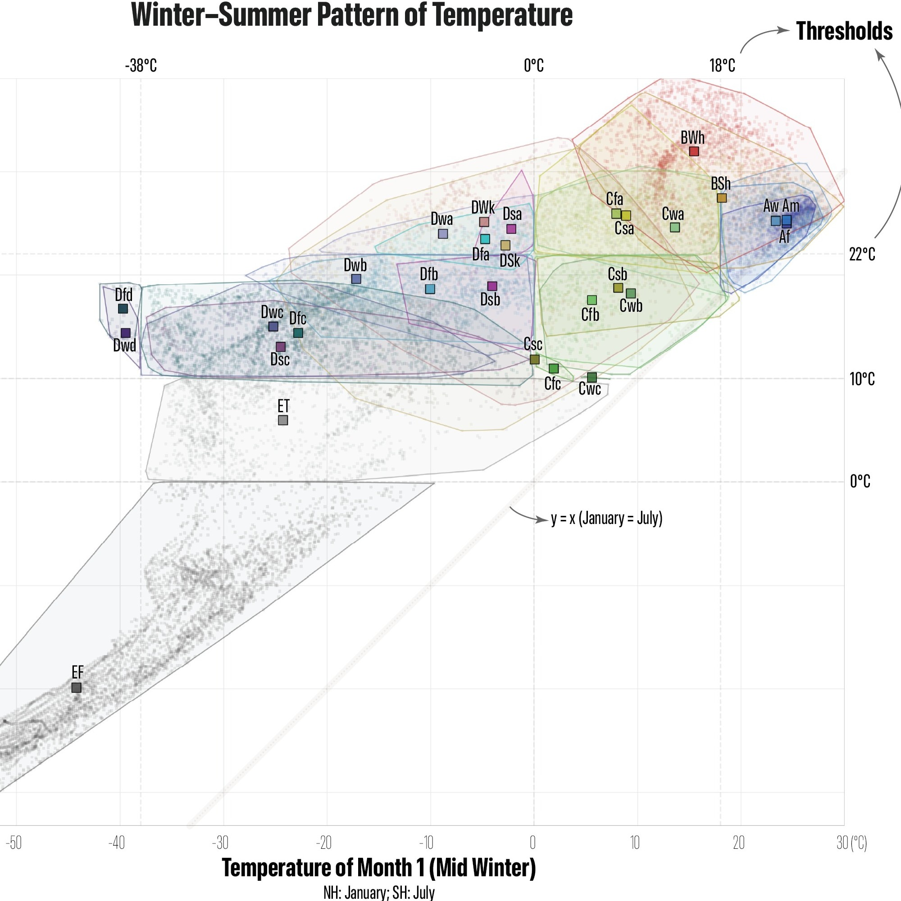
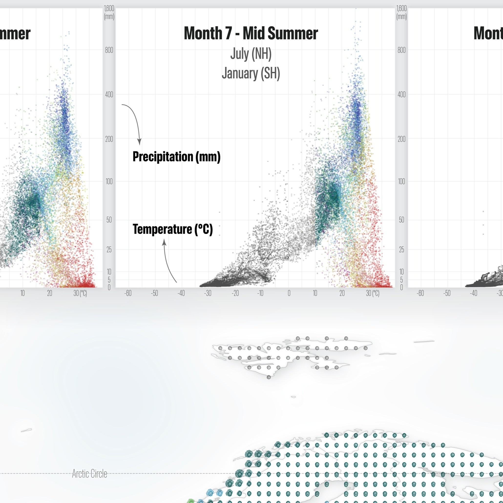
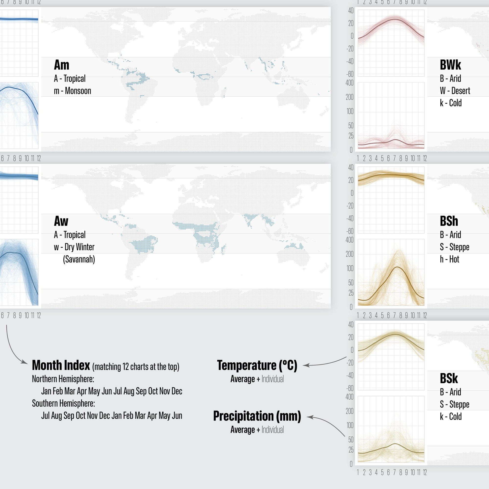

Köppen Climates Visualized
A comprehensive infographic of Köppen-Geiger climate classification
 Download Compressed Image
Download Full-Size Image
I have long been interested in climate, especially climate diversity and climate change. As I explored more climate-related topics, I realized that attempts to visualize climatic characteristics are surprisingly scarce. During my high school and undergraduate geography education in China, I was more familiar with a climate classification system tailored to China’s climatic characteristics, rather than the internationally dominant Köppen-Geiger climate classification. For this reason, I decided to begin with the Köppen system and create a multi-dimensional infographic of its monthly temperature and precipitation patterns. These visualizations are intended both as reference material for scholars in related fields and as an engaging tool for public geographic education and exploration.
I firstly reviewed recent advances in the Köppen climate classification and its cartographic representation. Setting aside the highly varied color schemes in popular science atlases, there are broadly two mainstream approaches: those represented by Kottek 2006 and Peel 2007, and those proposed by Beck 2018 and several subsequent studies. In my humble opinion, each approach has its own strengths and weaknesses in terms of color design. However, considering the latter’s advantages in public communication and data openness, I chose to adopt their classification standard, color scheme, and most importantly their dataset. I currently utilize their lowest resolution version (a spatial unit of one degree latitude by one degree longitude) for the period 1990 to 2020. At this resolution, the original 30 climate types are reduced to 29, and all of my visualizations are based on this dataset.
The main part of this map depicts monthly temperature and precipitation at each grid point as a statistical chart, arranged clockwise starting with January at the top. January’s temperature node is connected to the center of the chart, making the month pattern more apparent, while precipitation is shown as a filled area divided into 4 seasons by diagonal cuts. In terms of color, the colors used in the Beck paper (2018) were adjusted through a consistent set of rules to achieve a clearer and more aesthetically pleasing result. After extensive adjustment of axes and scales, the final result is presented on the map, with a prominently enlarged legend placed at the center.
The 12 small charts at the top represent the monthly temperature and precipitation characteristics of individual points of climate types, with a six-month shift applied for the Southern Hemisphere. The 29 groups of small charts at the bottom summarize the temperature, precipitation, and spatial distribution patterns of each climate type. The charts to the left of center illustrate annual temperature variations across climate types, including both month-by-month patterns and comparisons between the coldest and warmest months. The charts to the right of center present the corresponding precipitation patterns.
I hope this map can convey this traditional knowledge to a wider audience in a more creative form. At present, this map still has many aspects that could be improved. At the same time, it provides a strong foundation for my future climate-related mapping work, especially projects focused on climate change.
(Major Data Source: Beck, H., Zimmermann, N., McVicar, T. et al. Present and future Köppen-Geiger climate classification maps at 1-km resolution. Sci Data 5, 180214 (2018). https://doi.org/10.1038/sdata.2018.214)
Below are some detailed images:
  




